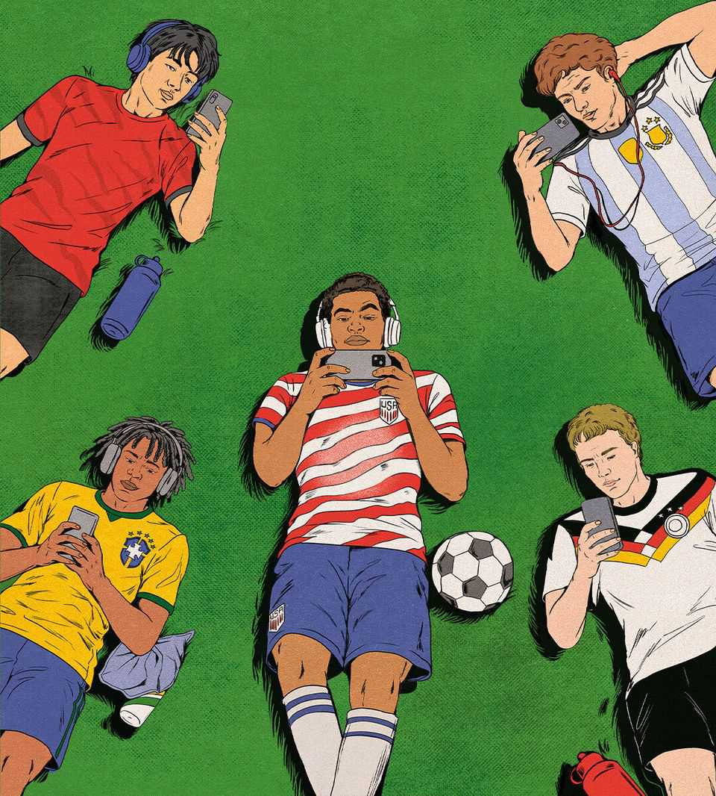

The World Cup paradox
How the rules of both entertainment and soft power are being rewritten
June 11th 2026

WITH LYRICS in English, French, Spanish, Italian and Japanese, the theme tune of the men’s World Cup, performed at its opening ceremony on June 11th, exemplifies the contest’s claim to foster global unity. Nearly half the world is expected to tune in over the coming weeks as the tournament moves towards its final on the outskirts of New York. A viewer might come away with two conclusions. First, that entertainment culture is more globalised than ever. Second, that America remains the soft-power superpower at the centre of it all.
Both assumptions would be wrong. Mega-events like the World Cup still seize global attention. But the bigger picture is that entertainment is fragmenting. From music to television to social media and gaming, audiences are tuning out of American content and embracing alternatives from closer to home. There is an emerging paradox: even as the world becomes more connected, people are choosing more local forms of fun. Even as billions tune in to a single show in North America, the American-led monoculture is fading.
This local turn is the opposite of what many predicted. Global entertainment platforms such as Spotify, Netflix, YouTube, and the Apple and Google mobile-app stores give people everywhere access to the same music, video and games. The biggest winners have been a lopsidedly American elite of megastars and brands—think Taylor Swift, MrBeast or Roblox—which have gone global as never before. The biggest sports leagues have soared in value along with them.
But below the top tier, entertainment is fragmenting. Sport has always been a reluctant globaliser, because people prefer to watch their local team. America’s National Football League, the world’s highest-earning sports property, earns 98% of its media-rights revenue at home. The English Premier League is the only football league in Europe that makes more in media rights abroad than it does at home. Every four years the world comes together for the World Cup and the Olympics. Otherwise, fans are mainly engrossed in domestic contests. New Yorkers are far less excited about the football than they are about the Knicks.
Other kinds of culture have long been more globalised, often thanks to America; think of music from Motown or TV from Tinseltown. But now this seems to be reversing. Music charts are becoming more local: in Brazil, an extreme case, 96 of the 100 most-streamed artists last week were Brazilian. Video-streaming services like Netflix and Amazon are producing more shows abroad, to woo subscribers in fresh markets. North America’s share of new streaming commissions has halved in the past six years, from 70% to 36%.
New media are no more global. YouTube offers content from every country, but its users gravitate towards clips from close to home: three-quarters of its “trending” videos manage to trend in only one country. Gaming on PCs and consoles remains dominated by a few worldwide franchises (including a football series formerly known as “FIFA”). But on mobile, which has a bigger and more diverse audience, regional variations are sharper. Across the five biggest gaming markets, no app features in every country’s top ten. While Americans play “Fortnite”, Asians have shifted to titles such as “Free Fire”.
Cheaper production and distribution have caused a boom in the supply of local entertainment. In the age of CDs, cinemas and game cartridges, there were huge economies of scale in pushing popular acts or products to go global. Today, producing and distributing new entertainment—whether songs, videos or games—is cheap enough for it to be profitable to target much smaller niches. In some places there is even evidence of a sub-national cultural boom: more than half the content posted on YouTube in India is in languages other than Hindi (mostly local ones). AI will enable ever more niche production.
The audience has also changed. A growing global middle class has made it worthwhile for Netflix to make big-budget shows tailored to Mexican subscribers, or for the developers of “Free Fire” to devise Bollywood themes for Indian gamers. And audiences’ discovery of new content is increasingly being led by algorithms rather than human tastemakers. Sometimes those algorithms send everyone to the same global hits—prepare for a blizzard of World Cup highlights on your social feeds—but they also divide them into niches. In one recent year, German songs made up only four of the 100 most-played tracks on national radio, but 44 of the country’s streaming top 100. People’s preferences have turned out to be more local than elite tastemakers thought.
Something will be lost if people’s cultural habits turn too far inward. A Britain that served only British food and “Carry On” films would be bleaker than purgatory. Yet it is cause for celebration that audiences now have so much more choice. Rather than a diet of entertainment from a country that had a historical advantage in its production and distribution, consumers can choose from a global menu of Danish hip-hop, Polish comedy or Chinese video games. Regulators should note that the turn towards local options has been brought about by technology, and not by rules of the sort imposed by Canada, where radio stations have to play unhealthy amounts of Justin Bieber to meet local quotas.
Governments will need to adapt to the changing dynamics of soft power. America’s century of dominance over global popular culture is over. It still controls much of entertainment’s distribution, via platforms such as YouTube and the app stores, and thus much of the industry’s profit. But it has lost its grip on content, and with it the cultural tractor-beam that has recruited millions of listeners, viewers and players to American values and ideas over the years. Other countries are rushing to fill the gap that America has left, from Brazil in music to South Korea in TV and China in gaming.
All eyes will be on America for the World Cup final next month. But it is a fading force in a new game of soft power that has only just kicked off.■
Subscribers to The Economist can sign up to our Opinion newsletter, which brings together the best of our leaders, columns, guest essays and reader correspondence.